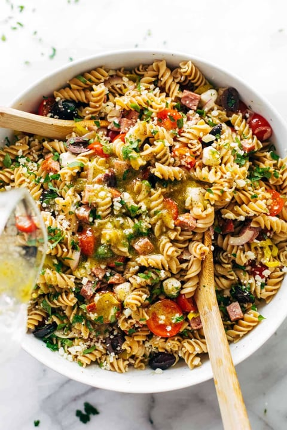

Italian Pasta Salad
\

Description
I first brought this pasta salad to a BBQ for my Cal Judo team. It was gone within the hour.
Since then I've constantly day-dreamed about it: the fresh, ripe tomatos,
plump mozzarella, olives, herbs, and homemade dressing make this simplistic dish really shine. The original recipe can
be found at Pinch of Yum.
Ingredients
Pasta Salad Essentials:
- 1 lb. uncooked pasta
- 3 cups cherry tomatoes, cut in half
- 8 oz fresh mozzarella cheese balls, cut in half
- 1 lb. salami or summer sausage, cut into cubes
- 3/4 cup kalamata olives, sliced
- 3/4 cup pepperoncini optional, but do it
- 1/2 cup sliced red onion
- 1/2 cup fresh parsley, chopped
Italian Pasta Salad Dressing:
- 1/2 cup olive oil
- 1/4 cup white vinegar, or red wine vinegar
- 1/4 cup water
- 1-2 tbsp coarse sea salt- see notes section
- 2 cloves garlic, or 1 tsp garlic powder
- 1 tbsp sugar
- 2 teaspoons each dry oregano and dry basil
- black pepper to taste
- fresh herbsif you want! parsley, basil, or chives all work.
Instructions
- Cook pasta according to package directions, in salted water for more flavor. Allow to cool slightly and toss with a little oil to prevent sticking.
- Blend up the dressing, or shake together in a jar.
- Toss all ingredients together! Use 3/4 of the dressing and save the rest to add dressing to leftovers.
- Keep in the fridge for 2-3 days. It tastes best the day AFTER you make it.
Notes
Reguarding Salt: Please note that the
amount written is for COARSE sea salt. If you are using
fine table salt, start with 2 teaspoons and add more to taste. The dressing itself will be very salty. Like, too salty for a normal salad. But in this recipe, that’s what we want! That dressing is going to get tossed with an entire pound of plain pasta, as well as a whole lot of fresh unseasoned vegetables, and it will taste delicious once it’s all tossed up. If you don’t want as salty a dressing, feel free to reduce it to 1 tablespoon.
Return to Top
Return to Homepage